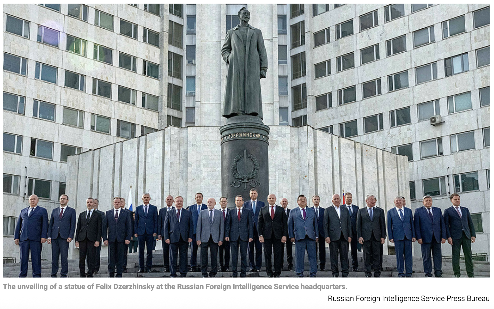

Felix Dzerzhinsky was a Bolshevik revolutionary and the founder of the Soviet secret police, the Cheka. He played a central role in establishing the Soviet system of political repression after the Russian Revolution.
Nickname: “Iron Felix” because of his reputation for strict discipline and ideological rigidity.
Role in Soviet security
After the communists (aka the Bolsheviks) seized power in 1917, Vladimir Lenin appointed Dzerzhinsky to create and lead the communist secret police-the Cheka (the All-Russian Extraordinary Commission for Combating Counter-Revolution and Sabotage).
The Cheka became the main instrument of the Red Terror during the Russian Civil War. Under Dzerzhinsky, the organization carried out arrests, imprisonments, and extrajudicial executions of people considered enemies of the communists regime.
Historical significance
Dzerzhinsky is important because he created the institutional model for Soviet and later Russian political police, later known as the NKVD (1930s-1940s), the KGB (1950s-1991)
These organizations continued many of the methods and structures first developed under his leadership.
